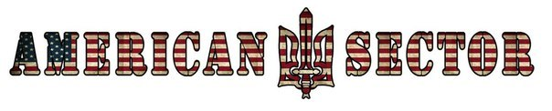

Как можно охарактеризовать силы, пришедшие к власти на Украине? С приходом этих сил на большей части Украины воцарилось беззаконие, правые громят офисы неугодных им партий, запугивают, избивают людей по своему выбору. Атрибуты буржуазной демократии отброшены в сторону, это — открытая террористическая диктатура.
Чья эта диктатура? За спиной победивших — финансовый капитал крупнейших империалистических государств. Один из ставленников этого капитала на Украине, олигарх Коломойский — владелец промышленно-финансовой группы «Приват», представленной в банковском секторе, нефтехимии, металлургии, пищевой промышленности, агросекторе, авиаперевозках, спорте и медиа, глава Европейского совета еврейских общин и президент Европейского еврейского союза (EJU), теперь назначен губернатором Днепропетровской области.
Шовинизм новой власти на Украине сомнений не вызывает, как и пещерный антикоммунизм, доходящий до вандализма.
Узнали? — Георгий Димитров ещё в 30-х годах сформулировал определение фашизма: «Фашизм — открытая террористическая диктатура наиболее реакционных, наиболее шовинистических, наиболее империалистических элементов финансового капитала, особая форма классового господства буржуазии».
Итак, перед нами фашизм. Значит ли это, что мы имеем дело с «украинским фашизмом»? Нет. Основа фашизма — финансовый капитал — здесь явно не украинский. Собственно украинского финансового капитала нет, тот же Коломойский не собственно украинский олигарх, а «щупальце» мирового финансового капитала, опутавшее Украину. Здесь мы имеем дело с классическим случаем «фашизма на экспорт» — проплаченным и организованным извне фашистским путчем.
Что несет новая власть Украине? Путчисты добивались «Евроинтеграции» — подписания Украиной соглашения с ЕС, которое несло Украине деиндустриализацию, резкое ослабление сельского хозяйства. Что ждет Украину — наглядно видно на примере прибалтийских государств. А ведь они вступили в ЕС полноправными членами, да и промышленность, доставшаяся им в наследство от СССР, к тому моменту не успела деградировать так, как на нынешней Украине.
О подъеме производства, развитии сельского хозяйства, науки, образования новая власть даже не заикается. А значит, Украину ждёт резкое ухудшение положения трудящихся, деградация общества.
Активно обсуждаются планы втягивания Украины в военные структуры НАТО, размещения американских баз, в том числе ракетных, на украинской территории. Это говорит о готовности использовать молодых украинцев в качестве «пушечного мяса», а украинскую территорию сделать мишенью для ядерного удара.
А в повседневной жизни новая власть несет украинцам бесправие, разгул террора «идейных» и простых бандитов.
Что делают украинские левые?
Несмотря на обилие левых публицистов коммунистической партии — авангарда рабочего класса — на Украине нет. Отсюда апелляции украинских левых к России, в которой сохранена буржуазная демократия, а шовинизм и антикоммунизм слабы и не поддерживаются государством. И руководство России проводит в отношении Украины, в целом, разумную политику. И, что очень важно, проводит твердо.
Но не надо забывать, что в буржуазной России жизнь трудящихся по-прежнему тяжела и беспросветна, и цель коммунистов — отнюдь не капитализм, хотя бы и российского образца.
Что делать в этой ситуации коммунистам Украины?
Положительным фактором является вынужденное втягивание в активную политическую деятельность большого количества людей. Это создает предпосылки для организации по производственным единицам — заводам и фабрикам. Это естественная форма организации, а не выдумка большевиков. Таким образом вполне естественно формировать по коллективам отряды самообороны, создавать рабочую милицию — не только потому, что люди на производстве хорошо знают друг друга, но и потому, что так легче защитить предприятия от криминала. Проблемы обмундирования, вооружения логично при этом возложить на администрацию предприятий. Также логично сократить участникам отрядов самообороны рабочий день с сохранением заработка, чтобы те могли полтора-два часа в день уделять обучению военному делу, патрулированию улиц и т.д.
Опираясь на такие отряды, рабочие органы — фабзавкомы — могли бы эффективно пресекать попытки саботажа, разворовывания оборудования и продукции со стороны отдельных работников администрации и собственников предприятий. Фабзавкомы способны на деле активно содействовать национализации предприятий тех собственников, которые запятнали себя сотрудничеством с нацистами, как это было в ряде государств послевоенной Европы.
Именно на организацию трудящихся, в первую очередь рабочих, по заводам и фабрикам, и следует обратить первоочередное внимание украинским коммунистам.